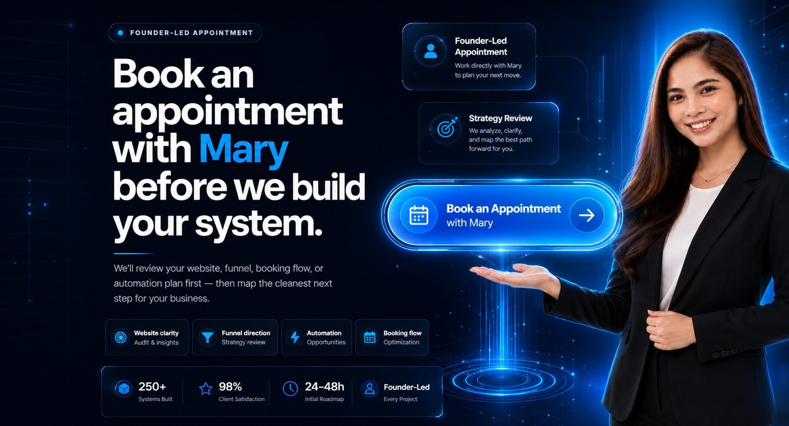

Executive Operations Center
Business Systems That Scale.
Mary Digi Solutions builds CRM command centers, automation workflows, booking systems, websites, funnels, and AI-assisted follow-up layers for cleaner operations and scalable growth.
Lead
CRM
Automation
Booking
Client
Mary Digi Growth OS
Live
Lead stages organized
Follow-ups online
Calendar synced
InstantResponse time
VisibleLead status
AutomatedNext action

Founder-Led Appointment
Book an appointment with Mary before we build your system.
We’ll review your website, funnel, booking flow, or automation plan first — then map the cleanest next step for your business.
Website clarity
Funnel direction
Automation
Booking flow
Office Command View
Tech systems presented like an executive operations room.
A cleaner view of how lead capture, CRM, automation, booking, reporting, and content operations connect inside one business workflow.
Lead pipeline visibility
New inquiries are organized by stage, source, status, and next action.
Follow-ups keep moving
Reminders, confirmations, nurture steps, and handoffs run with less manual work.
Cleaner appointment path
Calls, confirmations, and client context stay connected to the business process.
Leadership-ready signals
Owners can see what is happening without digging through disconnected tools.
Campaign assets in rhythm
Content, landing pages, and offers are structured around conversion intent.
Systems Stack
From inquiry to booked client, every layer connects.
Scroll through the operating layers Mary Digi builds for businesses: lead capture, CRM, automation, booking, reporting, and client experience.
Inquiry enters the system
Forms, landing pages, and calls-to-action route new opportunities into a visible pipeline.
WebsiteInquiryCRM
Lead status becomes clear
Contacts, stages, notes, and next actions are organized so the team knows what to do next.
Follow-up happens faster
Confirmations, reminders, nurture, and handoffs reduce manual chasing and missed opportunities.
TriggerEmailTask
Appointments stay synced
Calendars and meeting flows make the next step easier for both the business and the client.
Operations become visible
Reporting and process clarity help founders understand performance without scattered tools.
VisibleAlignedScalable
Growth Stack
One connected system for smarter business growth.
Mary Digi connects the tools, workflows, and customer touchpoints that help a business capture demand, respond faster, organize leads, and keep leadership informed.
⚙️↗Automation
👥CRM Systems
🌐Websites & Funnels
📅Booking Systems
📊Reporting
0Core growth systems
0Connected business areas
0Automation-first support
0Scalable operations focus
Executive View
Designed like a premium control room for your business.
Every system is built around clarity: where leads come from, what happens next, who needs follow-up, and which actions create measurable business momentum.
Lead Journey
Capture to conversion
Automation Layer
Follow-ups, reminders, tasks
Client Experience
Fast, organized, professional
Reporting
Visibility for better decisions
Enterprise Readiness
Built for leaders who need clarity, consistency, and control.
Mary Digi Solutions does more than design pages. We help structure the operating layer behind marketing, sales, client communication, and reporting so teams can work from one cleaner system.
Outcome-led planning
We define the business outcome first, then map the CRM, automation, website, funnel, and content support needed to reach it.
Operational visibility
Lead stages, booking steps, follow-ups, and reporting checkpoints are organized so owners can see where opportunities stand.
Documented delivery
Projects are structured with clear setup notes, implementation steps, handoff guidance, and support expectations.
Premium client experience
We focus on fast response, clean booking, professional messaging, and fewer manual gaps between inquiry and next action.
The Problem
Manual work quietly slows down growth.
Missed follow-ups, disconnected tools, and admin overload can make a growing business harder to manage than it should be.
New inquiries disappear when there is no clear pipeline or follow-up system.
Manual communication creates delays and missed booking opportunities.
Business data lives in too many tools instead of one clean operating system.
Our Solution
A smarter system from lead to booked client.
01Visitor
02Lead
03Automation
04Booking
05Growth
Implementation Workflow
Clear delivery from audit to launch.
Each build follows a practical workflow so the final system is easier to understand, easier to use, and easier to improve after launch.
Our Services
Digital systems that look, feel, and work like a real growth engine.
Each service is designed as part of a connected business system — from lead capture and CRM organization to automation, booking, content, and growth support.
24/7
automation engine
Business Automation
Automated follow-ups, reminders, onboarding, task routing, and operational workflows that reduce manual work.
TriggerWorkflowFollow-UpResult
- Workflow automation
- Smart reminders
- Process tracking
+15
this week
CRM & Lead Management
Clean pipelines, lead stages, contact records, and customer communication systems organized in one place.
LeadFollow-UpAppointmentClient
- Lead pipelines
- Customer tracking
- Sales visibility
98%
mobile-ready layout
Websites & Funnels
Professional websites and funnel pages designed to communicate your offer clearly and generate inquiries.
VisitorLanding PageLead CaptureBooked Call
- Business websites
- Landing pages
- Sales funnels
30m
discovery calls
Booking Systems
Calendar booking systems with confirmations, reminders, and appointment flows for service-based businesses.
Choose TimeConfirmReminderMeeting
- Calendar setup
- Booking reminders
- Google Meet flow
CRM
configured properly
GHL Setup
Setup and configuration for pipelines, calendars, forms, workflows, campaigns, and CRM systems.
PipelineFormsCalendarWorkflow
- Pipelines
- Forms & calendars
- Workflows
30d
content planning
Social Media Management
Content planning, posting support, page optimization, and audience engagement for business growth.
PlanCreatePublishEngage
- Content planning
- Posting support
- Page optimization
Reels
ads and promos
Video Editing
Professional editing for reels, ads, promos, testimonials, and branded video content.
Raw ClipsEditCaptionsPublish
- Reels & ads
- Promos
- Branded content
1.2k
prospects mapped
Lead Generation
Prospect research, list building, outreach support, and lead qualification systems for growth.
ResearchList BuildQualifyOutreach
- Prospect research
- List building
- Lead qualification
Ops
daily support
Admin/Executive Support
Scheduling, documentation, reporting, coordination, and support for daily business operations.
ScheduleDocumentReportCoordinate
- Scheduling
- Documentation
- Reporting
Featured Work
Proof of creativity, systems, and execution.
Explore selected video editing and website projects that show how Mary Digi Solutions presents brands with clarity, motion, and conversion-focused design.
Video EditingWebsite BuildsMotion Graphics
 YouTube
YouTubeMotion Graphics
Dynamic Motion Graphics
Professional motion graphics with smooth animations and modern design elements for brand presentations and social content.
 YouTube
YouTubeVSL • German Market
German Client VSL
Professional Video Sales Letter for the German market with compelling storytelling and clear call-to-action.
 YouTube
YouTubeProduct Video
CIC Pro Hearing Aid
Clean product video focused on benefits, clarity, and client-ready presentation for a German hearing aid brand.
 YouTube
YouTubePremium Product Showcase
Fußwohl® Leather Shoes
Elegant product showcase for premium German leather shoes highlighting quality, craftsmanship, and trust.
Credibility
A practical build method, not empty promises.
Until verified client testimonials are ready, this section focuses on how Mary Digi works: strategic planning, documented implementation, transparent handoff, and business-first execution.
Business-first discovery
We review the offer, customer journey, current tools, and operational gaps before recommending the build.
Clear implementation notes
Clients should understand what was built, why it matters, and how the system supports the next step.
Transparent execution
We avoid overcomplicating the setup and focus on systems that are practical, usable, and aligned with growth.
Starting at $97 USD
Ready for a clearer growth system?
Request a free system review and we will help identify the highest-impact workflow, CRM, website, funnel, or automation improvement for your business.